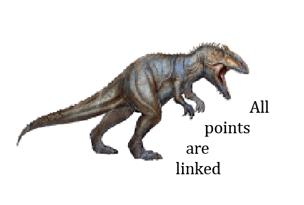

Germano Dushá
Germano Dushá
born in Serra dos Carajás, 1989
based in São Paulo
germano@ofora.org

Education:
Organizations:
Curatorial:
Books:
Published essays (selected):
Residency programs:
Audiovisual:
Other projects (selected):
Other activities (selected):
- 2019 - Curatorship for Traplev's exhibition Como ativar os estilhaços da história pela linguagem: re-alfabetização política urgente - Periscópio - Belo Horizonte
- 2019 - Curatorship for Thiago Martins de Melo's exhibition Rasga Mortalha - Galeria Cavalo - Rio de Janeiro
- 2018 - Curatorship for Randolpho Lamonier and Thiago Martins de Melo's exhibition República da Cobra - Periscópio - Belo Horizonte
- 2018 - Text for Ricardo Carioba's work Organic Decline - BANAL BANAL - banalbanal.org
- 2018 - Text for Ricardo Carioba's exhibition Organic Decline - singuhr – projekte / Galerie Wedding - Berlin
- 2018 - Text for C.L. Salvaro's exhibition Eira Alheia - Central Galeria - São Paulo
- 2018 - Visual dialogue and text for Bruno Baptistelli's exhibition Acúmulo - Galeria Pilar - São Paulo
- 2018 - Curatorship for Maria Noujaim's exhibition Recomeços: quatro inícios - Galeria Jaqueline Martins - São Paulo
- 2017 - Text for Luiz Roque's exhibition Hall - Mendes Wood DM - São Paulo
- 2017 - Text for Renata De Bonis' participation in the Fondante project - Museo della frutta - Turin
- 2017 - Curatorship for Traplev's exhibition Systems of structures and elements of scam, room 7 - Complexo Funarte - Brasília
- 2017 - Text for Paulo Nimer Pjota's exhibition The history in repeat mode — image - Mendes Wood DM - Brussels
- 2017 - Text for Maria Noujaim's exhibition Giro (Twist) - um trabalho um texto - São Paulo
- 2017 - Curatorship for Joana Cesar's exhibition The Bridge (Where he told me I can't go) - Athena Contemporânea - Rio de Janeiro
- 2017 - Curatorship for Flora Leite's exhibition Heaven's Mouth - Oficina Cultural Oswald de Andrade - São Paulo
- 2016 - Text for Felipe Barsuglia's work site-terapia - BANAL BANAL - banalbanal.org
- 2016 - Text for Helô Duran & Ceticências' work Virtual Sunset - BANAL BANAL - banalbanal.org
- 2016 - Curatorship for Gustavo Ferro's exhibition Ground Control - Sé - São Paulo
- 2016 - Text for Paulo Nimer Pjota's exhibition Synthesis between contradictory ideas and the plurality of the object as image - Mendes Wood DM - São Paulo
- 2015 - Accompaniment and text for Fábio Tremonte's exhibition Sunday - Periscópio - Belo Horizonte
- 2015 - Accompaniment and text for Renata De Bonis' exhibition ,to full the interlude without breaking it, - BFA Boatos Fine Art - São Paulo
- 2015 - Accompaniment and text for Jaime Lauriano's exhibition Nessa terra, em se plantando, tudo dá - Centro Cultural Banco do Brasil - Rio de Janeiro
- 2015 - Curatorship for Leonardo Stroka's exhibition Defeat, dissipation and squandering - Warm - São Paulo
- 2015 - Accompaniment and text for Janaina Wagner's exhibition Decupagem/Crônica de um final anunciado - Museu de Arte de Ribeirão Preto (MARP) - Ribeirão Preto
- 2015 - Coordination, production and text for Matheus Rocha Pitta's exhibition Fountain for the Unknown Protester - Coletor - São Paulo
- 2015 - Publishing The City as Medium - PLATAFORMA:VB (Videobrasil)
- 2014 - Coordination, production and text for Anton Steenbock's exhibition Pop Tower - Coletor - São Paulo
- 2014 - Coordination, production and text for Lais Myrrha's exhibition Orchestra Rehearsal - Coletor - São Paulo
- 2014 - Coordination, production and text for Renata De Bonis' exhibition Suite - Coletor - São Paulo
- 2014 - Coordination and artists selection for the exhibition 32th Coopy RIghOTs - we MADE it READI, in Brazil - 8Salon - Hamburg